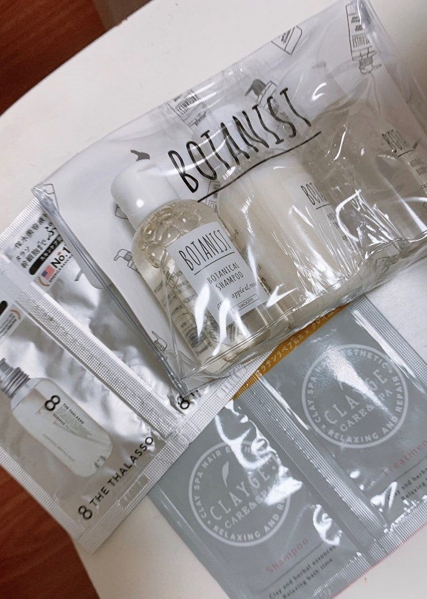
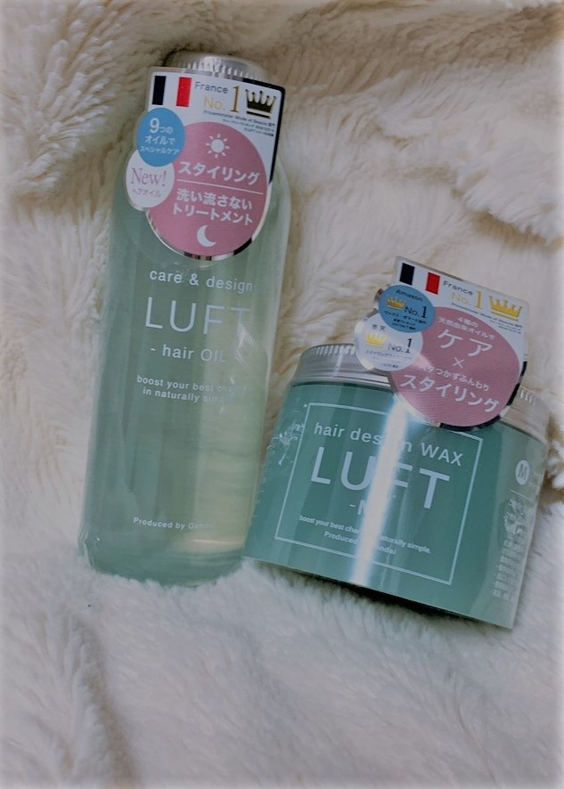
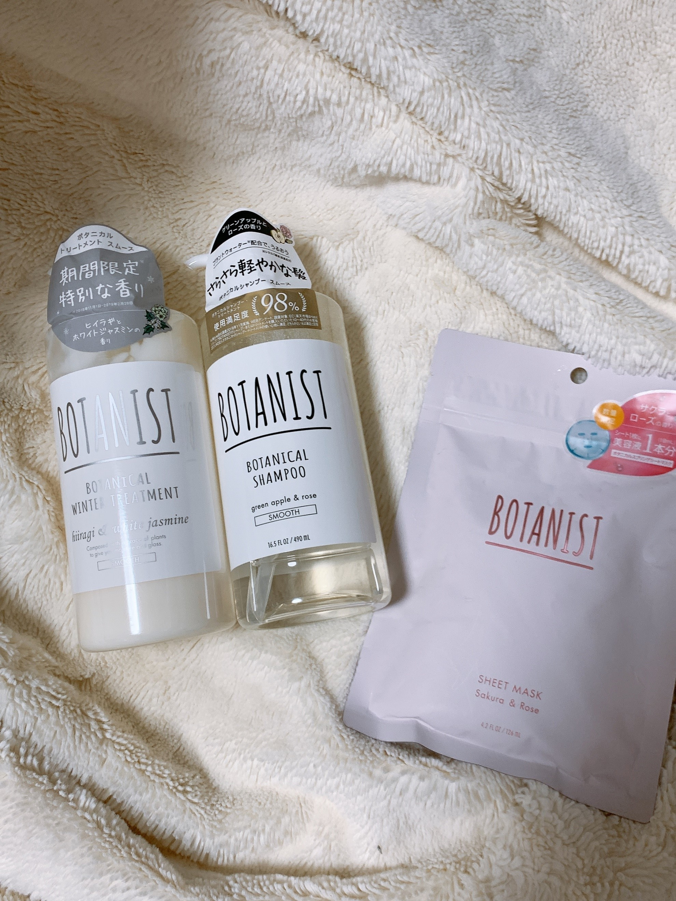
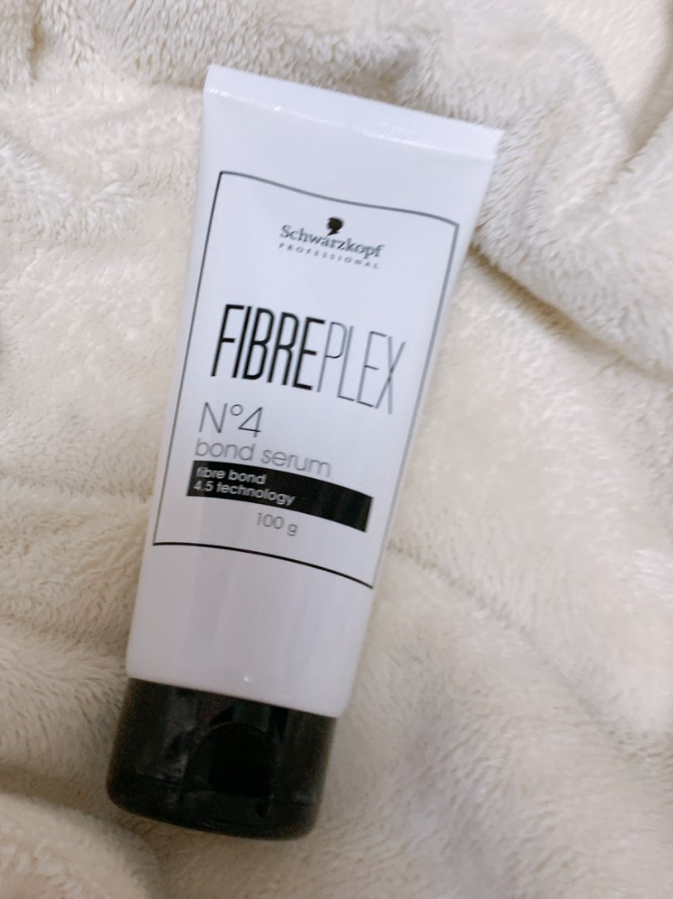
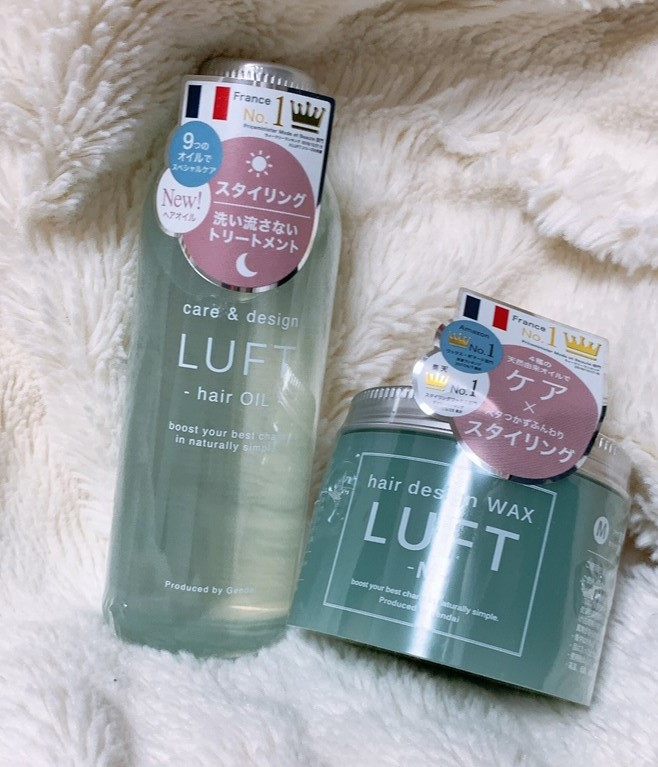
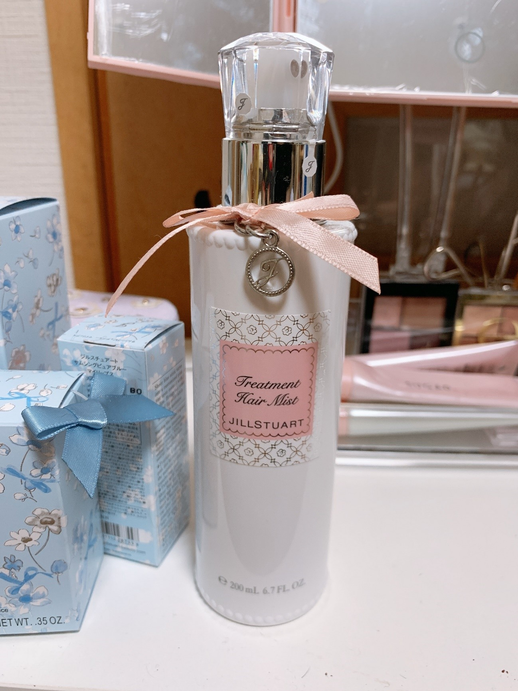
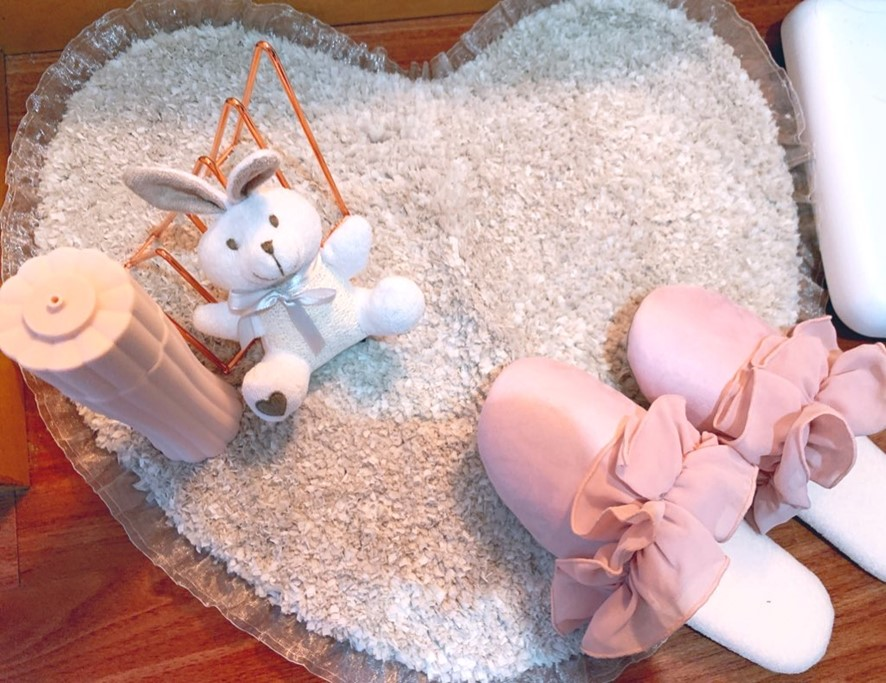

買って良かったヘアケア用品おすすめランキング【2020】
 目次
その他ヘアケア商品ランキング*ワックス・ヘアミスト・ブラシなど
ヘアケア商品すべてのランキング
１位 エイトザタラソ リセットクレンジング＆ヘッドスパ

深層水で地肌をマッサージしながら洗うプレシャンプー。毎日のシャンプーを週1〜2回置き換えての使用がおすすめです。ひんやりとした感覚で夏場にお勧め、美容に行かずにお家でヘッドスパ感覚を楽しむことが出来ます。泡立ちもよく、洗い流すと髪全体にうるおいを感じられます。
シャンプーおすすめランキング
1位 ボタニカルシャンプー スムース
ボタニカルシャンプーはモイスト・スムース・ダメージケアの全てを使用し、香りと洗い心地を総合して私はスムースタイプをお勧めします。グリーンアップルとローズの香りです。
ボタニカルシャンプーは髪の毛が細くて絡まりやすい人に特にお勧めです。どのシリーズも香りはとても良いのですが、ダメージケアは花のような香りが強いので苦手な人にはお勧めしません。ただしカラーリングを繰り返している人にはダメージケアをお勧めします。
トリートメントおすすめランキング
1位 ファイバープレックス No.4 ボンド セラム
“洗い流さないトリートメント”の「ファイバープレックス No.4 ボンド セラム」 
芯に働くピンクのセラムが、日々のスタイリングやヘアアイロンなどのダメージから髪を守り、ハリコシのあるしっかりとした質感の髪に導きます。また、独自のテクノロジーが髪を引き締めて染料の流出をふせぎ、ヘアカラーの色持ちをよくしてくれます。美容院でも使用されていて、販売も美容院のみですが、髪を切るついでに購入をお勧めします。
ヘアオイルおすすめランキング
1位 ルフト ヘアオイル ＆ワックス
『LUFTケア＆デザインオイル』はオイルなのにとてもサラッとしていて、髪も手もベタつかない仕上がりが魅力◎さらに、ウェットスタイリングをつくるときは、ワックスと混ぜて使用するのがオススメ！「LUFTヘアデザインワックス-M-」に混ぜて使用すれば、しっかりとしたツヤ感をプラス。オイルの量を調節することで、好みに合わせて【ツヤ感・質感・仕上がり】も調節が可能です。
その他ヘアケア商品ランキング
1位 ジル・スチュアート ヘアミスト ホワイトフローラル
パッケージが可愛くて、香りがとても良いです。指通りをなめらかにするヘアミスト。キューティクル補修成分(ヒアルロン酸誘導体)が、浮き上がってめくれてしまったキューティクルを整えます。髪の表面がしっかり整うことで、光をキレイに反射するようなツヤツヤの髪を叶えます。 ラズベリーエキス、カシスエキス、アボカドエキスなどのモイスチャー成分を配合。髪に保湿成分がしっかりと届き、みずみずしくうるおいに満ちた髪になります。
さいごに
ここでお勧めしたヘアケア商品はあくまで個人的にあった物を記載しております。いちばん自分に合う商品を見つける方法は、シャンプーなどは特に大きいものをいきなり買わずに１Dayのものを買って色々試してみることをおすすめします。